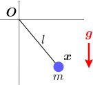
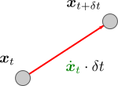
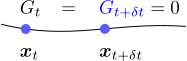
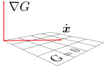
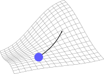
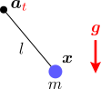
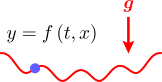

振り子の運動
を計算したい。
拘束力 と、初期値 に対する拘束条件が知りたい

振り子のおもりの運動
を計算するには、運動方程式：
を具体的に書き下せばよい（
は重力
、
は拘束力、右図）。運動方程式が分かれば、第3章で議論したように、初期位置
および初期速度
のもとで、
が計算できる。未知の量は拘束力
だけなので、
を導出することが目的となる。
ただし、初期値
は、これまでのように自由な値を取れるわけではない。実際、振り子の場合、拘束条件として、「原点からの距離がひもの長さ
に一致する」（右図）：
という条件がかかるので、おもりの初期位置
も、この条件
を満たさなければならない。では、初期速度
についてはどうだろうか。式()には速度は含まれてい。しかし、だからといって
を自由にとれるわけではない。実際、ひもが伸びたりたるんだりしてはならないので、直感的に、速度
はひもと垂直になることが分かるだろう。この条件を理論的に導く方法を考えたい（結論から言うと
である）。
よって、
を実際に計算するために必要となるのは、初期値に対する拘束条件の導出と、拘束力
の導出である。この章では、これらを踏まえて以下の3つの節に分けて議論を行う：
初期値に対する拘束条件拘束力の導出物体の運動の計算（参考）拘束が時間に依存する場合
（なお、拘束条件を表現する方法として、式()のように
と表す以外に、極座標などの別の座標系を用いる方法も考えられる。それについては、第9章で扱う。）
7.1初期値 に対する拘束条件
この節では、初期値
が満たすべき拘束条件()を導出する。
初期値 に対する拘束条件：式()
拘束条件
は、位置
に対する条件である。

一方、速度
は、拘束条件の中には含まれていない。しかし、冒頭でも述べたように、任意の
を取れるわけではない、即ち、
にも拘束条件がかかっている。
に対する拘束条件を書き下すにはどうすればよいだろうか。もともと速度
は、
秒後の位置
の1次近似（右図）：
から出てきた量であった（第1章の1.1節）。よって、
に対する拘束条件は、「
秒後にも拘束条件
が破れないこと」を要求すれば得られるはずである。

まず、おもりの位置
における拘束条件
の値は、時間変化する
を通して時刻
の関数
になっている。これを
で表すことにする：
。すると拘束条件は、時刻
においても成り立たなければならないので、
となる（右図）。
は、1次近似により
と書ける。時刻
においても拘束条件
が常に成立するためには、右辺の
がともにゼロでなければならない。
は、もともとの拘束条件そのものであり、速度
に対する条件にはなっていない。よって、もう一方の
に着目する。

式()において、微分の連鎖律（第5章の【5.1-注3】において
を
としたもの）により
を括り出すことができ
となる。これは確かに
に対する拘束条件になっている。
は拘束面に垂直なベクトル（右図）なので、この式は、
が拘束面上にあることを意味しておりもっともらしい（振り子の場合は
がひもと直交していることを意味している）。なお、第4章の4.2節でも述べたように、
となるように
をとっているものとする。
以上をまとめると、
は以下の拘束条件を満たさなければならない：（これ以降、
の添え字
は省略する）
従って、初期値
もこの式を満たすようにとっておく必要がある。（2階微分
も新しい条件を与えそうな気がするが、すぐ次節で見るように、これには加速度が含まれ、初期値ではなく拘束力
に対する条件になる。）
7.2拘束力 の導出
この節では、拘束力
の具体的な式()を導く。拘束条件()とダランベールの原理()を課せばよい。
拘束力が決まることで、最終的な運動方程式()が得られる。
拘束力 を決定する式：拘束条件()とダランベールの原理()
初期値
に対する条件が分かったので、後は拘束力
の導出である。
が、式()
を満たしている時、その後も拘束条件
を満たし続けるためには、任意の時刻で
が成り立てばよい。（分かりにくければ次のアナロジーを考えるとよい：初期位置・初期速度
が
で、それ以降の加速度
も
であれば、位置
は
のままである。
を
に置き換えればよい。）
式()は、式()の第2式をもう一度微分したものであり、加速度
を含む条件式になっている。その式に、運動方程式
を代入して
を消去すれば、拘束力
に対する条件が得られる。しかし、
はベクトルなので、式()の1条件だけでは完全には決まらない。しかも、式()さえ満たしていれば拘束条件は満たされるのだから、拘束条件からはこれ以上の条件は出ない。よって、
を決めるためには、物理的な条件を加える必要がある。

その条件は既に分かっている。即ち、第4章の4.1節で述べたダランベールの原理「拘束力
は拘束面に垂直になる」である（右図）。これにより、
と
は平行となるので、未定乗数
を用いて、
は以下のように書ける：
振り子の場合には、
がひもと平行になることを意味しており、もっともらしい。
以上で、必要な条件が出そろった。ダランベールの原理()の未知数は
だけなので、拘束条件()（と運動方程式）を用いることで、
が求まり
が決まる。
拘束力 を与える公式：式()
この計算を実際に行うと、拘束力
は、以下の【7.2-注1】の式()のようになる。この結果は、一般的な拘束条件においても成り立つ（振り子に特有の性質は使っていない）。
【7.2-注1】拘束力 の公式()
拘束条件
が課せられている時、拘束力
は以下のようになる：
は重力などの外力（＝拘束力以外の力）である。
導出
まず、運動方程式にダランベールの原理()を代入すると
となる。後は、この式が拘束条件の2階微分()を満たすように
を決めればよい。
を実際に計算するには、式()の第2式
をもう一度微分すればよい：
（以下の積の微分公式【7.2-注2】において
としたもの。）式()を式()に代入して
を消せば、
に対する方程式になる。これを解くと、式()の
に一致する。
【7.2-注2】積の微分公式
時刻
に依存する2つの行列
に対し、それらの積
の微分は以下のようになる：
導出
求める微分は、
を1次近似した時の
の係数（以下の赤字部分）である：（時刻を省略した右辺の項は
での値）
最終的な運動方程式：式()
拘束力
が求まったので、運動方程式
も確定する。具体的に書き下すと、外力
を含む部分・含まない部分に分けて、以下のようになる：（
）
右辺の第1項は拘束面に平行な方向（＝運動可能な方向）を向き、同第2項は垂直な方向を向いている。
式()はやや複雑な式だが、以下の【7.2-注3】のように、幾何学的に解釈しやすい形に変形できる。
【7.2-注3】運動方程式()の別表現
式()を、解釈しやすいように1次近似の形で（差分方程式として）書くと、以下のようになる：
ただし、
は時刻
での値、それ以外は時刻
での値である。
は、拘束面（の接平面）への直交射影行列になっている。
この式の意味を考えてみよう。
は、拘束が存在しない場合の加速度に等しい。従って、右辺の
部分は、拘束がない場合の「時刻
での速度」である。これに
がかかっているので、その速度を、拘束面へ直交射影したものが、実際の速度
になる。このように、拘束条件は、直交射影の部分にのみ影響を与えるわけである。
導出
まず、運動方程式()が、拘束面への直交射影行列
を用いて
と書けることを示す。そのためには、自明な式
の両辺を微分した後、運動方程式を使えばよい：
運動方程式：ダランベールの原理：
後は、1次近似の定義式：
と
を、式()に代入すれば、両辺が1次近似の範囲で確かに等しくなることが分かる。
7.3物体の運動 の計算
以上で、必要な議論がそろった。この節では、拘束条件
が課されたおもりの運動
の計算方法についてまとめた後、具体的な例として、冒頭で述べた「振り子の運動」と「ゆがんだ床の上を滑る運動」を扱う。
物体の運動 の計算
拘束条件
によって拘束された物体の運動
を計算するには、以下の手順を踏めばよい：
- その後の時刻
での位置
は、運動方程式()から計算できる（運動方程式の解き方は第3章と同じである）。ただし、外力
は既知であるとする。
【例題1】振り子：初期条件()、運動方程式()
振り子の運動を計算する（右図）。拘束条件
およびその微分は以下のようになる：
（
の導出は第4章の【4.3-注1】。）
これらを用いると、初期値
に対する拘束条件()は
となる。運動方程式についても、式()に、式()と
を代入すれば以下が得られる：
（第9章の9.2節で、この方程式を極座標で書き直す。）
なおこの場合、式()を使うと、ほぼ暗算で式()が導出できる。実際、（運動可能な方向は
と垂直な方向なので）直交射影行列が
となることはすぐ分かる。これを式()に代入すればよい。
実際に数値計算を行うと、右図のようになる。
【例題2】 のグラフ上の運動

次に、もう1つの例として、3次元空間内のグラフ
で表される曲面上におもりを拘束する場合を考える。拘束条件は
とすればよい。
の微分は以下のようになる：（赤字部分は第5章のベクトル値関数の連鎖律【5.1-注3】による）
なお、
と
は、偏微分の可換性（以下の【7.3-注1】）により等しくなるので、一方だけ計算すればよい。
上式を、拘束条件()に代入すると、初期値
に対する条件が得られる。また、運動方程式も、式()から得られる。しかし、きれいな形になるわけでもないので、代入結果については割愛する。数値計算を行う場合、このような代入処理はプログラム内で行えばよいので、代入後の式を具体的に書き下しておく必要はない。
適当な
を決めて数値計算を行うと、右図のようになる。なお、重力が働いている。
【7.3-注1】偏微分は可換
偏微分は可換である。即ち、2階全微分可能な任意の多変数関数
について以下が成り立つ：
ただし、
は、
による偏微分の略記である：
証明
第15章の15.1節で証明する。
7.4（参考）拘束が時間に依存する場合

ここでは、動く振り子の運動
を計算する。これは、振り子の中心点
が時間とともに動くようになったものである。拘束条件
は
となり、時刻
に依存することになる。
おもりの運動
を計算するには、ここでも「初期値
に対する拘束条件」と「拘束力
」の2つが分かればよい。前節までの類推により、
は
を満たせばよく、
はダランベールの原理から導出できることが期待される。
動く壁との衝突（第5章）では、弾性衝突直後の速度を得るためにかなり議論を要した。一方、今考えている拘束された運動では、拘束条件が時間変化するかどうかによって議論はほとんど変わらない。これは、衝突の場合は、拘束面に垂直な方向の速度を考える必要があるのに対して、拘束された運動では、垂直方向の速度は拘束条件から自動的に決まるためである。
初期値 に対する拘束条件：式()
初期値
に対する拘束条件は、前章と同様、
において
を満たすことである：
第2式は、以下の【7.4-注1】から得られる。ただし
である。
【7.4-注1】合成関数の微分公式
任意の
の関数
を考える。
が
に依存するならば、
は、
に関する1変数関数とみなせる。これを
で微分したものは、以下のようになる：
導出
まず、
に対し、通常の全微分を考えると
となる（第5章の【5.2-注1】）。さらに、
が
に依存するので、
の全微分を考えることができる：
後は、式()に式()を代入して、
を括り出せばよい：
微分
は、
を1次近似したときの
の係数なので、赤字部分である。
拘束力 と運動方程式：それぞれ式()と式()
拘束力
の導出も、前章の議論をなぞればよい。即ち、拘束条件の2階微分：
とダランベールの原理：（
は未定乗数）
を連立して
を求めれば、
が確定する。実際に解くと、以下の【7.4-注2】の式()のようになる。（当然だが、
の場合、時間依存しない場合の拘束力()に一致する。）
これにより、運動方程式
は以下のようになる：
【7.4-注2】時間変化する拘束条件による拘束力：式()
時間に依存する拘束条件
が課されている時、拘束力
は以下のようになる：
は重力などの外力（＝拘束力以外の力）である。
導出
拘束条件()の微分を実際に行うと、以下のようになる：（赤字部分は式()の第2式）
運動方程式
にダランベールの原理()を代入したもの：
を式()代入して
を消去すれば、
に対する方程式となる。これを解くと、
が決まり、式()のものに一致する。
物体の運動 の計算
時間に依存する拘束条件
によって拘束された物体の運動
は、以下のように計算できる（「時間変化しない拘束の場合」とは使う式が異なるだけである）：
- その後の時刻
での位置
は、運動方程式()から計算できる。
【例題1】動く振り子：運動方程式()、初期条件()
節の冒頭で述べた通り、中心点
が動くような振り子（右図）の拘束条件は
である。
の微分を計算すると、以下のようになる：（
は
のみに作用し、
は
両方に作用することに注意）
初期値
に対する拘束条件は、上式を式()に代入すればよい：（
，
）
運動方程式は、上で計算した
の微分と重力
を、式()に代入すれば得られる：（
）
適当な
を採用して数値計算を行うと、右図のようになる。
【例題2】波打つ床

もう1つの例として、グラフ
で表される曲面上に、おもりを拘束する場合を考える（右図）。拘束条件
は
のようにとることができ、その微分は以下のようになる：
初期値
に対する拘束条件は式()から決まり、運動方程式は式()から決まる。しかし、きれいな形になるわけでもないので、結果については割愛する。
3次元の場合に、適当な
を採用して数値計算を行ってみると、右図のようになる。